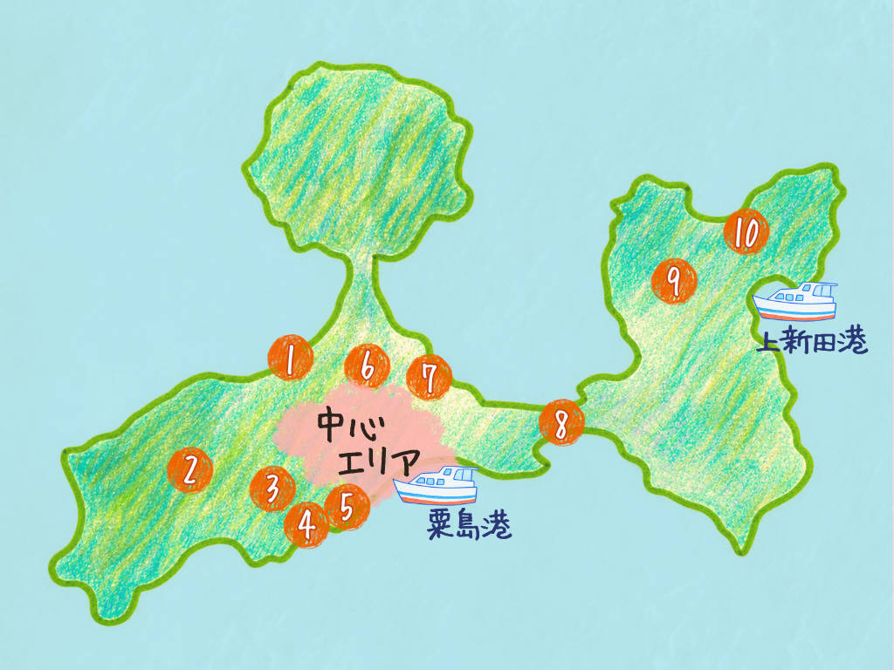
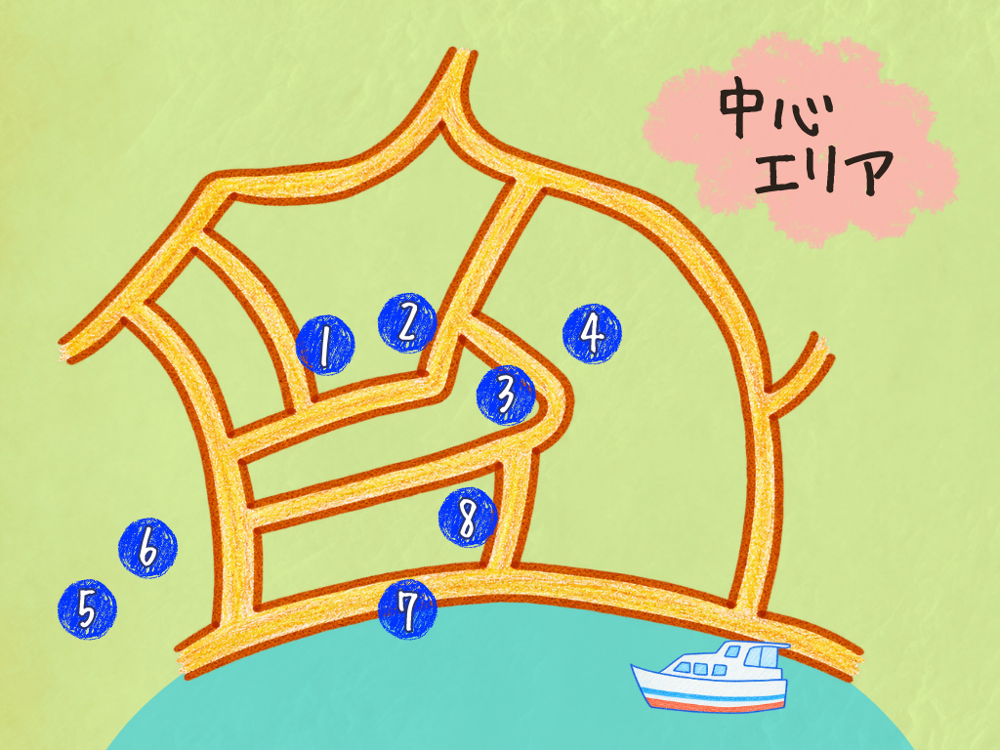

粟島について
粟島は、人口約150人の三豊市詫間町にある小さな島です。
三つの島が陸続きになったので、スクリューのような形が特徴的。
歴史・自然・アートがつまった魅力いっぱいの粟島をお楽しみください
見どころスポット
気になる番号をタップ！
粟島全体マップ

📍 全体マップの番号を選んでね！
粟島中心マップ

📍 中心マップの番号を選んでね！
おすすめコース診断
紙芝居
紙芝居を閲覧できるコーナー
粟島は、人口約150人の三豊市詫間町にある小さな島です。
三つの島が陸続きになったので、スクリューのような形が特徴的。
歴史・自然・アートがつまった魅力いっぱいの粟島をお楽しみください
気になる番号をタップ！

📍 全体マップの番号を選んでね！

📍 中心マップの番号を選んでね！
紙芝居を閲覧できるコーナー